A modular kitchen shaped around the ritual of cooking together—transforming preparation into conversation, hospitality and shared presence.
Scroll to explore ↓
InstitutionIED Milano
ProjectCollaborative thesis · Team of 3
Duration10 months
FocusResearch · Concept · CMF
ContributionResearch, concept development, CMF, 3D support and visualization
01 / The premise
Beyond efficiency.
Contemporary kitchens are highly resolved as workspaces, yet often overlook the social reality around them. Convivo asks how the kitchen can support preparation without separating the person cooking from everyone else.
Brief
A domestic system in stainless steel.
Design a modern, modular indoor kitchen that leverages the durability, elegance and hygienic qualities of stainless steel in an American context. The brief focuses on ergonomic furniture, functional accessories and seamless appliance integration, enhanced by luxurious finishes and materials for practicality, low maintenance and timeless appeal.
Our vision
Precision, honesty and contemporary refinement.
We are a group of designers passionate about high-quality stainless steel. We work with the material in a way that highlights its modern design potential, strength and durability, while preserving its raw, authentic aesthetic.
Context
Gathering at home.
Gathering at home is central to American life, where family and friends come together to share meals, celebrate traditions and strengthen bonds. These gatherings reflect hospitality, connection and the creation of lasting memories through shared experiences.
Moodboard
Architecture, materiality and human rituals.
This moodboard explores the intersection of architecture, materiality, and human rituals. References emphasize calm spatial compositions, refined stainless-steel craftsmanship, modular systems, and environments that naturally encourage gathering and interaction. Warm hospitality, domestic rituals, and restrained detailing shape the project’s emotional direction, while contemporary interiors and minimalist furniture inspire a timeless aesthetic. Together, these influences establish Convivo as a kitchen that seamlessly integrates function, atmosphere, and meaningful social experiences.
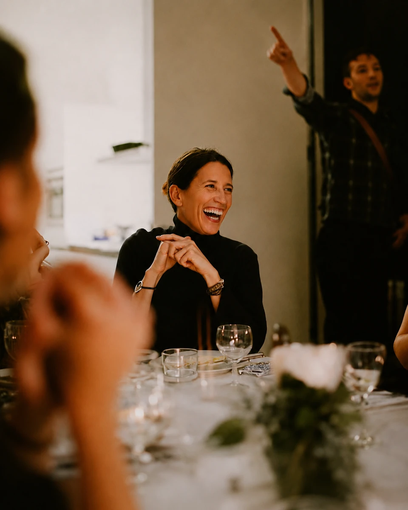
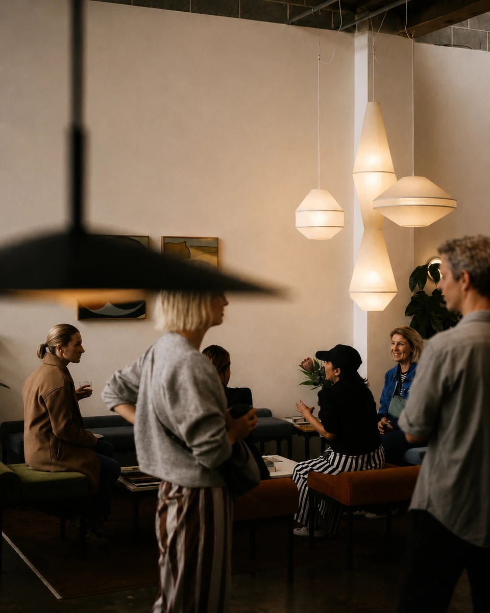
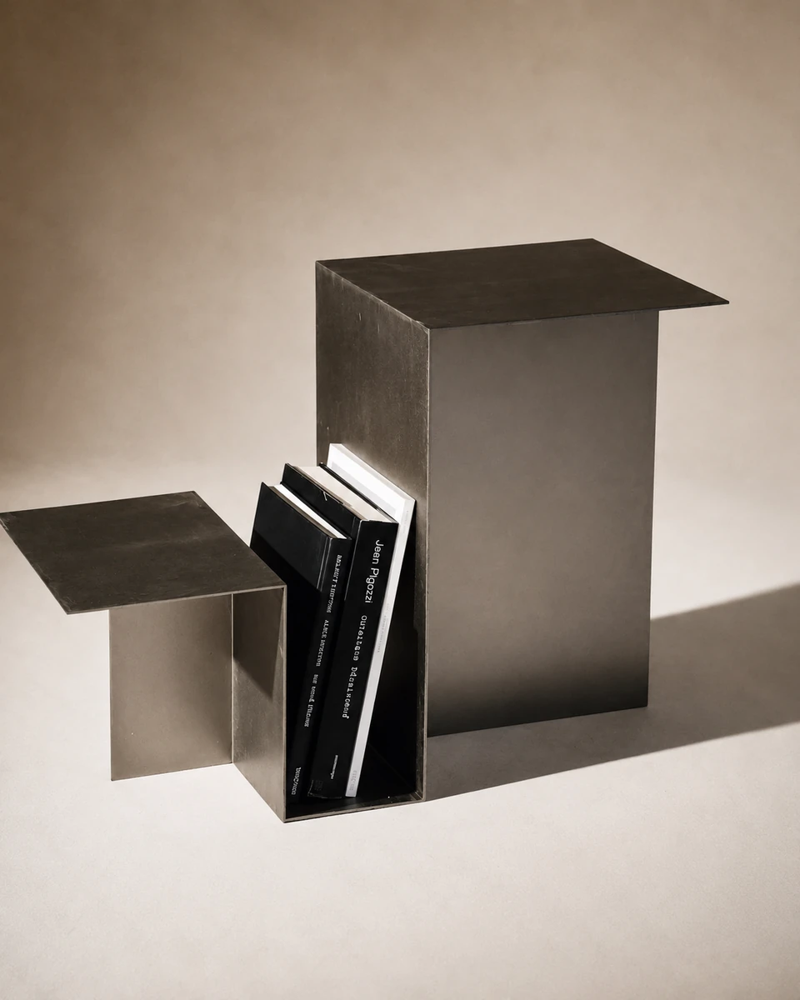
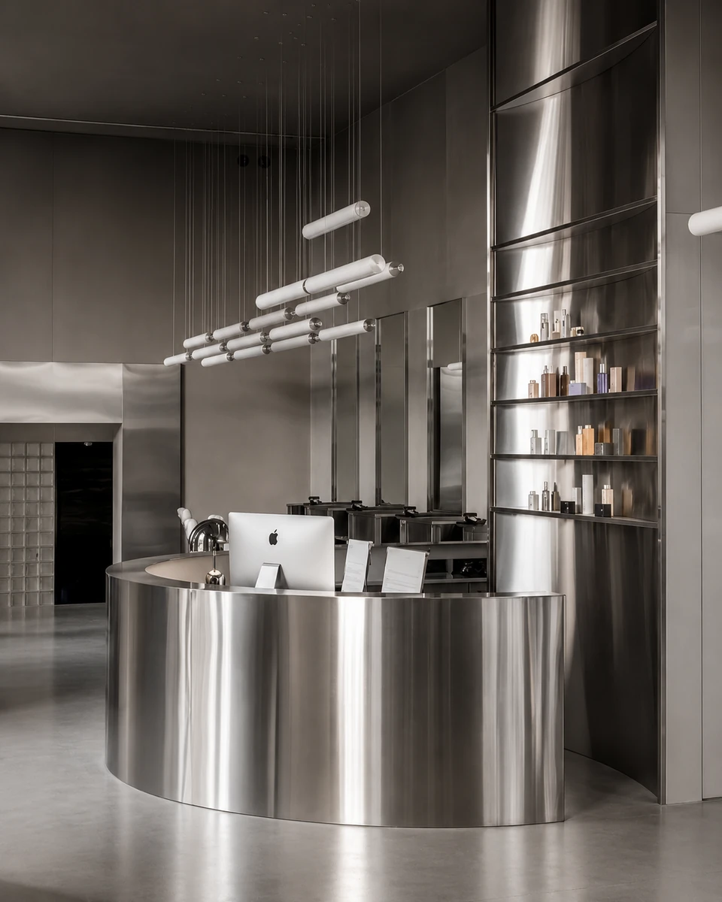
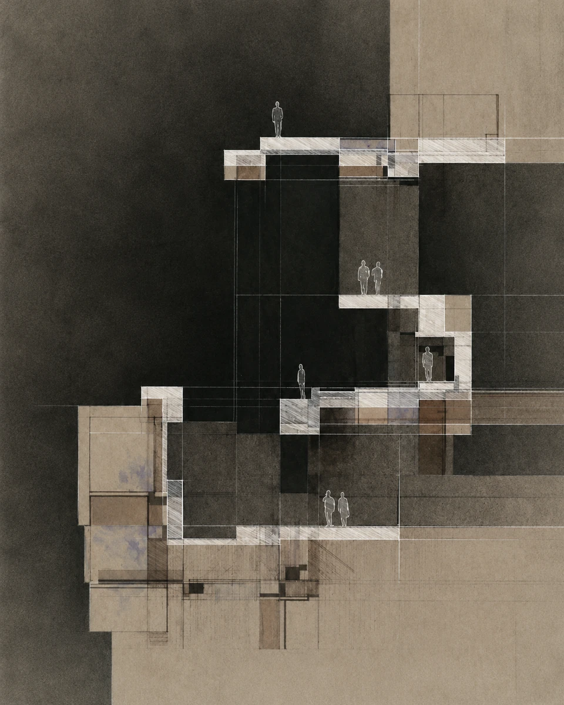
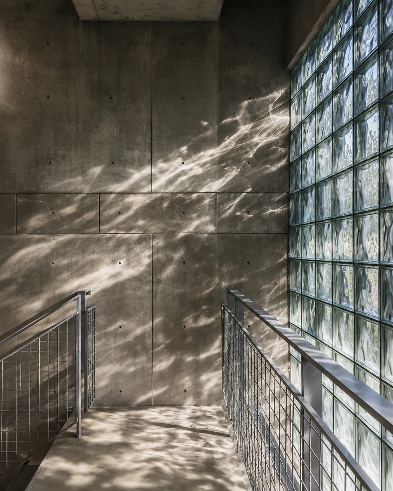
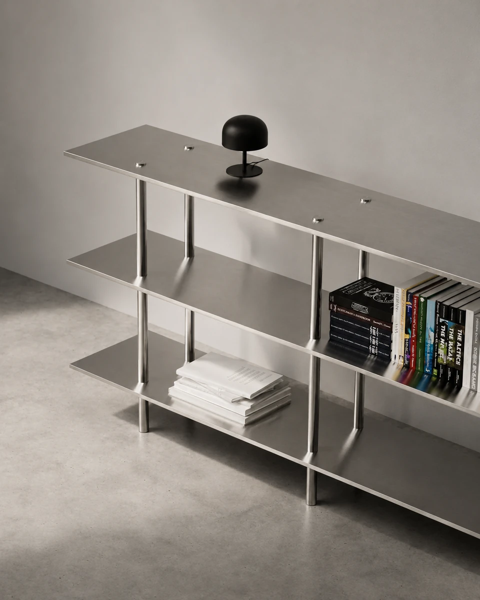
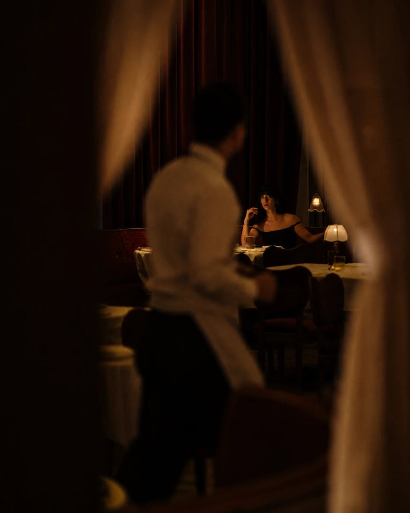
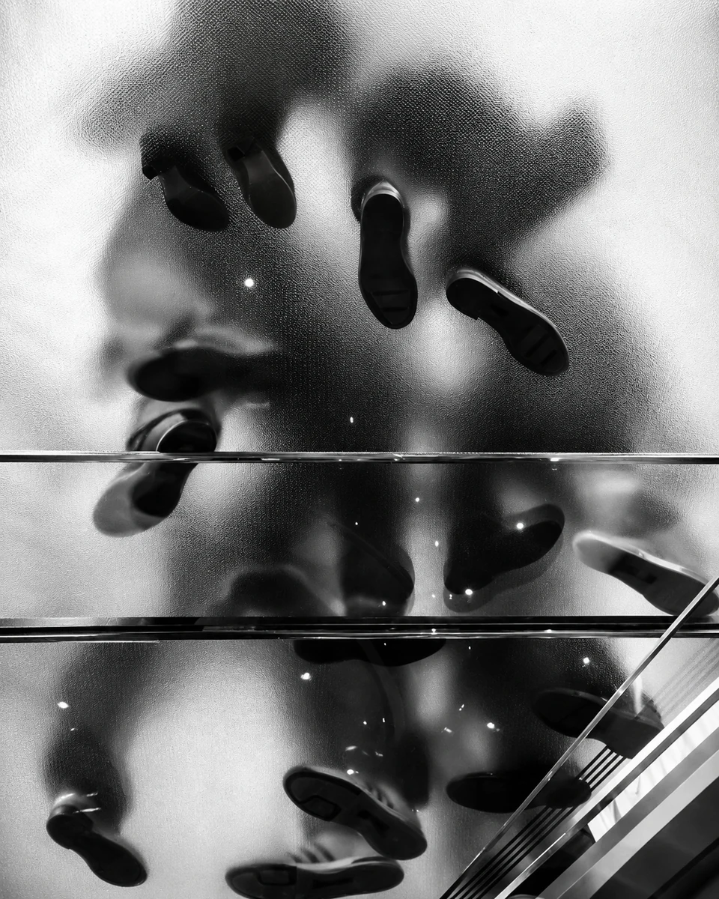
02 / Context
Gathering means more.
Food is not only nourishment. Hosting at home becomes an expression of hospitality, generosity and belonging—yet the host is frequently isolated by the space designed to support it.
Gathering
Unlike purely family-centred meals, modern gatherings often include friends, neighbours and colleagues. Shared meals remain vital to social bonding.
Means more
Food is not just nourishment. It is a symbol of hospitality, warmth and connection, and hosting at home becomes a heartfelt expression of care, generosity and belonging.
Before and after COVID
Before COVID, restaurants ruled social life. Homes now offer comfort and safety, with kitchens transformed into intimate hubs for meaningful connection and shared moments.
The other side
Gatherings bring joy, but hosting is stressful. Cooking and entertaining clash, often leaving hosts alone and overwhelmed in the kitchen.
Research references: Pew Research Center, 2019 · McKinsey, 2021 · Statista, 2022
03 / Evidence
Listening before designing.
Eighteen personal interviews with people living in the United States explored how cooking, hosting and spatial layout affect participation.
01 · Lack of inclusion
Traditional arrangements isolate the cook and reduce participation in the shared moment.
02 · Poor layout
Unnecessary movement separates activities and interrupts natural interaction between people.
03 · Multitasking pressure
Managing preparation and conversation simultaneously creates distraction and stress.
04 · Visual clutter
The traces of preparation remain visible after dining, limiting the room’s ability to return to calm social use.
Persona
Luice & Laura
Designers living in New York City, they often organize dinner parties and gatherings at home. They need a space that fulfils the practical demands of a kitchen and a gathering place—adaptable for hosting while blending into the surrounding environment without giving up aesthetics.
Market insight
78%
of new-construction home buyers identify an open floor plan as a top priority.
61%
see the kitchen as the home’s social centre.
National Kitchen & Bath Association, 2023 report.
01
Current market
The kitchen market often prioritizes efficiency, storage and aesthetics, while social interaction, shared cooking and inclusive participation remain comparatively underexplored.
02
Blurring the lines
A quiet design language allows the kitchen to blend into its surroundings without becoming invisible, challenging the conventional perception of what a kitchen should look like.
03
Gathering sensation
The space is designed with being around people as its first priority, using composition and atmosphere to let viewers envision gathering before they focus on appliances.
To transform the kitchen into an inclusive, connective heart of the home, we must address the stress of multitasking, poor layout and the lack of shared engagement caused by isolation.
04 / Convivo
A contemporary living object.
Convivo is not just a kitchen. It goes beyond functional needs, integrating roles typically fulfilled by separate furniture into one cohesive system. By redefining boundaries, it tackles the isolation of closed-off kitchens and creates a more open, connected and inviting environment.
01 / 03
Blending
Furniture-like proportions allow the kitchen to belong naturally within the living environment.
02 / 03
Adapting
Moveable boundaries and concealed functions let the space shift between preparation and social life.
03 / 03
Enjoying with everyone
Why be separated when you can enjoy other people’s company without sacrificing functionality? An open central relationship keeps cooking, conversation and shared participation connected.
01
Blending
Mimicking a living space more than a conventional kitchen allows Convivo to belong to its surroundings without giving up aesthetics.
02
Adaptation
A modular kitchen gives users the option to change its arrangement according to space, activity and need.
03
Constant dialogue
Closed on both sides, Convivo can sit in the middle of a room without disturbing it. Its shape remains in dialogue with the environment while the panel can conceal preparation clutter whenever separation is needed.
05 / Two realities
A boundary that participates.
Convivo changes how much the kitchen reveals. From the living side, open shelving creates a curated display while concealing kitchen functions. From the kitchen side, integrated storage and concealed preparation areas improve workflow, cleanliness and everyday cooking.
Living-room sideCalm architectural presenceKitchen sideOrganized working environment
Work triangleA clear relationship between storage, preparation and cooking.
05 / Experience
A scene of gathering.
The following sequence shows how the system moves from preparation to hospitality, then returns the shared room to visual calm.
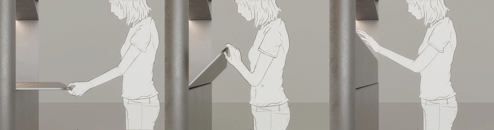
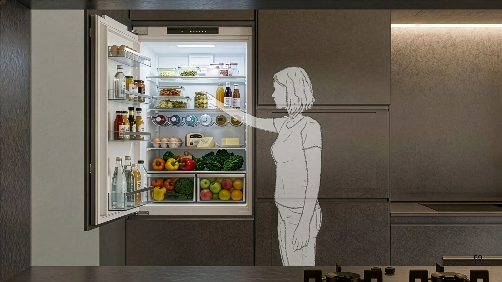
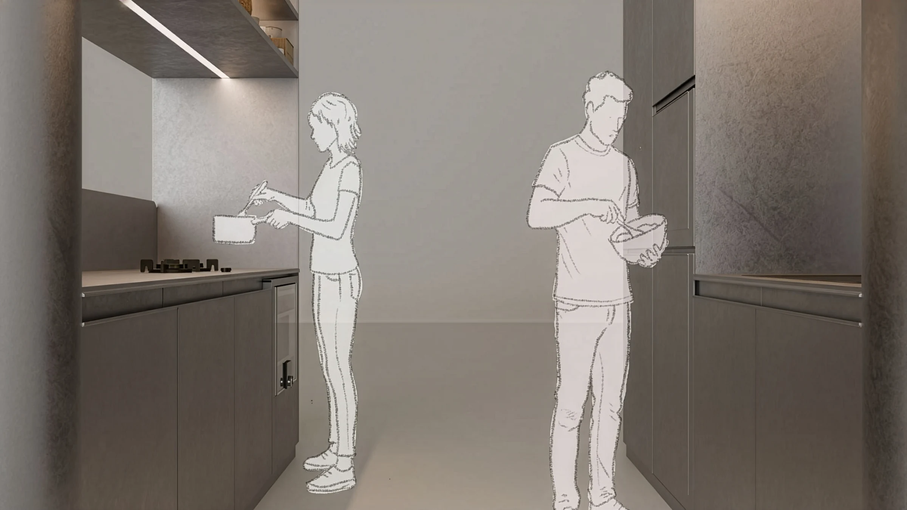
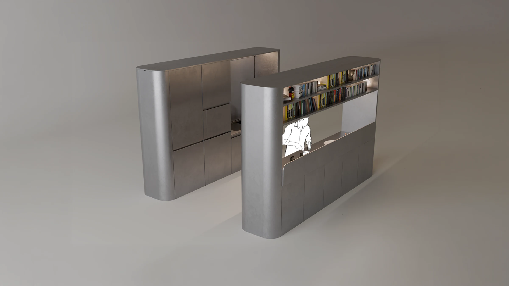
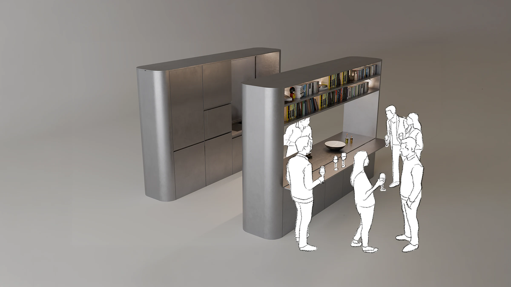
01 / Arrival
The journey begins
The host remains connected to the room as guests arrive; the kitchen becomes the place where the evening starts.
02 / Position
Taking positions
Open sightlines make conversation natural while leaving preparation surfaces accessible.
03 / Adapt
Adaptive separation
Sliding elements tune the relationship between concentration, concealment and participation.
04 / Prepare
Accessible organization
Deep drawers and dedicated zones keep essential tools visible and within reach, reducing unnecessary movement.
05 / Conceal
Hiding elements
Sliding compartments conceal everyday tools and keep the working surface neat without slowing preparation.
06 / Reveal
Sliding hidden elements
Concealed storage and tools can be revealed when needed, then returned behind clean architectural surfaces.
07 / Equip
Using appliances
Strategic appliance modules are arranged according to need, keeping technology integrated rather than visually dominant.
08 / Flow
Corridor layout
A corridor layout maximizes workflow, enabling two users to prepare meals comfortably without interrupting one another.
09 / Screen
Hidden from the other side
Storage remains concealed from the living area, preserving calm interiors while reducing everyday visual clutter.
10 / Connect
Being together
With the shelf open, the kitchen creates a window to the social space, allowing conversation to continue while cooking.
11 / Share
The social hub
The monolithic volume becomes the social heart of the home—a central anchor for cooking, conversation and connection.
12 / Traces
Being together means mess
Preparation and dining naturally create clutter that can interrupt a clean, social living environment.
13 / Reset
Being together can be strategic
After dining, the surface closes to conceal clutter, allowing the room to transition seamlessly back into a composed social environment.
07 / Components
Components
Vertical Element
The grid inside it makes it possible to hold everything in place.
Horizontal Shelf
Helps the kitchen blend in with the living space by mimicking household furniture.
Horizontal Cabinet
Split into two parts: one is dedicated to the kitchen only and the other is for hosting.
Sanitary
Area dedicated to the sink and cleaning, with built-in lights and hidden dish storage.
Appliances
Area dedicated to appliances; each module is made ad hoc for each appliance.
Counter Top Area
Default cooking area.
08 / Design language
Architectural Simplicity
Soft radiused edges, clean horizontal layering and integrated architectural volumes create a calm visual identity. Every detail is restrained, balancing warmth with precision while expressing modularity, production feasibility and timeless presence.
Accessible organization
Clearer access, less movement.
Drawers replace traditional sliding cabinets because they provide faster, clearer access during cooking. Strategically placed units keep tools visible and within reach, reducing unnecessary movement.
Integrated ventilation
Performance without visual interruption.
The ventilation system is concealed within the backsplash, extracting fumes while preserving clean architectural surfaces. Removing the overhead hood improves openness, continuity and the social quality of the kitchen.
09 / Modules & configurations
Designed to belong.
The kitchen is customized through a modular system that simplifies assembly. Components can evolve with users’ needs while maintaining clarity, flexibility and a seamless overall experience.
Single custom solutions
A refined, self-contained solution balances functionality, architectural simplicity and premium craftsmanship across diverse interiors.
Integrated sink
A seamlessly integrated sink preserves the clean architectural language and uninterrupted preparation surface.
Preparation zone
A dedicated area organizes cooking tasks, appliances and storage into a seamless workflow.
Standalone configuration
Without the bookshelf module, Convivo retains its architectural identity as a compact independent kitchen.
Open working space
Removing the divider encourages fluid movement, visibility and collaborative cooking.
10 / Material character
Color Variations
The kitchen is visualized for a gathering scenario utilizing its adaptive design features, creating beautiful moments without hassle.
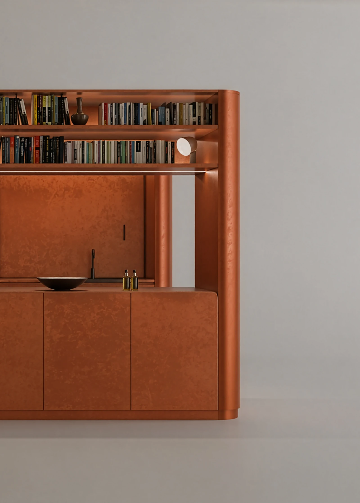
Monolithic Warm Oxide
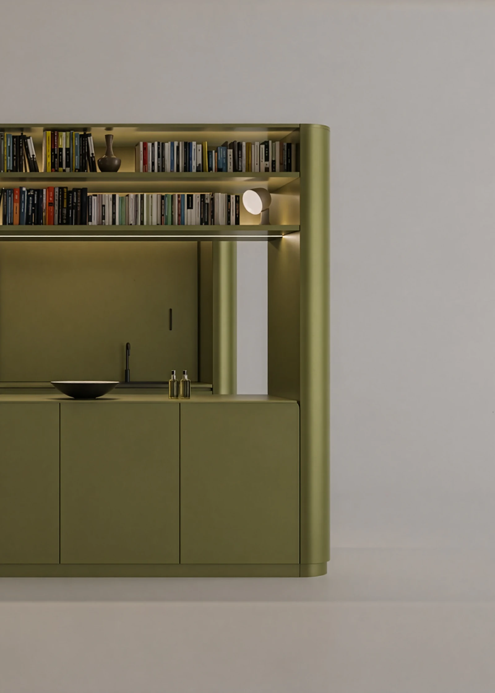
Monolithic Green
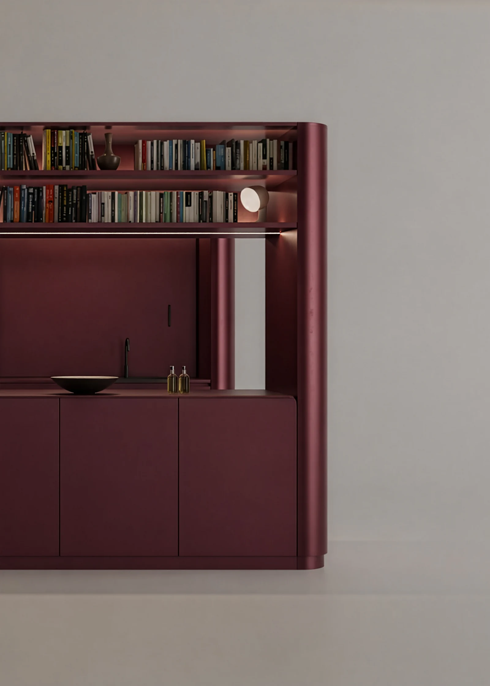
Monolithic Burgundy
Monolithic Warm Oxide
A uniform stainless-steel surface reinforces a monolithic presence. Reduced visual noise enhances spatial integration, allowing the kitchen to blend seamlessly into its environment while maintaining a strong, quiet identity.
Monolithic Green
The vibrant green surface creates a calm yet distinctive architectural presence. Reduced visual noise enhances spatial integration, allowing the kitchen to blend seamlessly into its surroundings while maintaining a strong, quiet identity.
Monolithic Burgundy
The deep burgundy surface creates a rich and refined architectural presence. Reduced visual noise enhances spatial integration, allowing the kitchen to blend seamlessly into its surroundings while maintaining a strong, quiet identity.
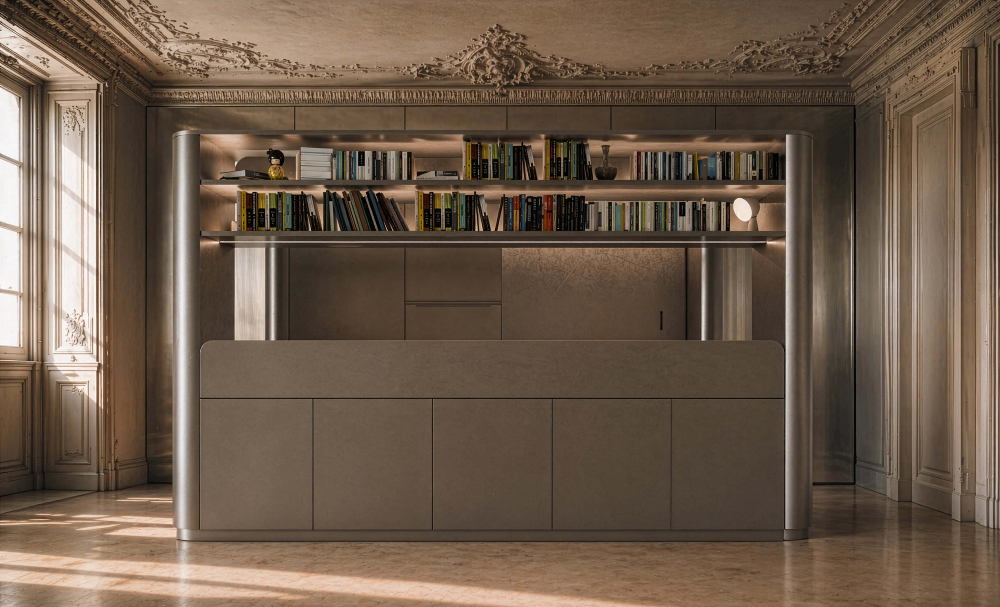
11 / Closing reflection
Designed for Togetherness
Every design decision, from spatial organization to integrated functionality, supports a more inclusive way of living. Convivo encourages conversation, collaboration and shared rituals, transforming the kitchen into the emotional heart of the contemporary home.